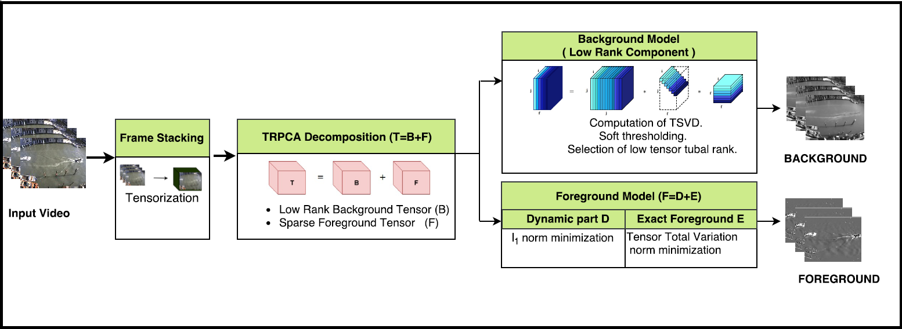
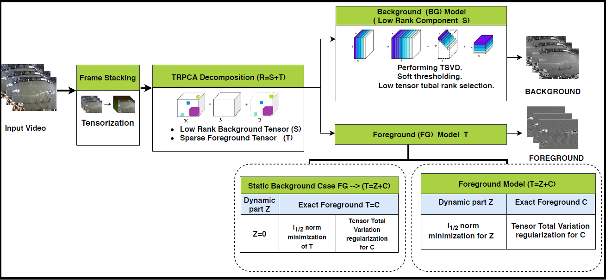
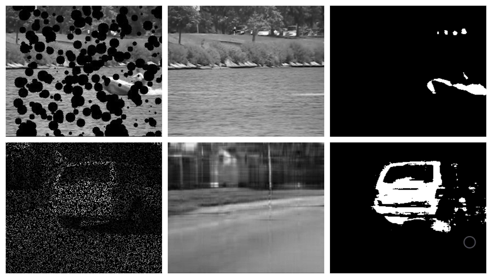
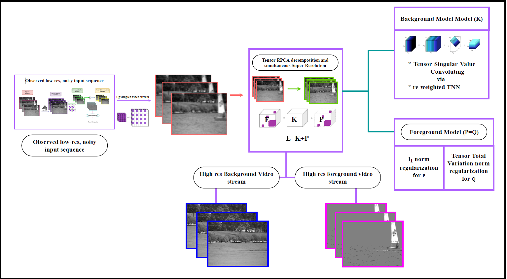
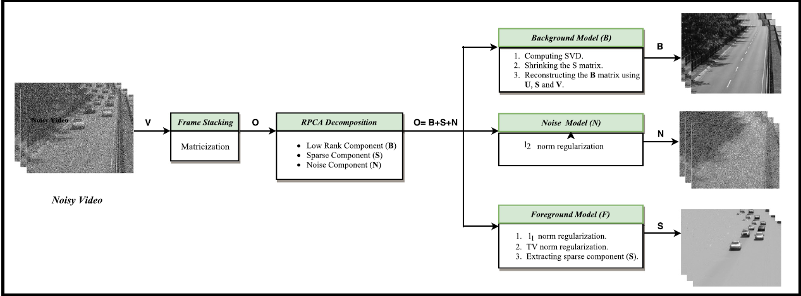
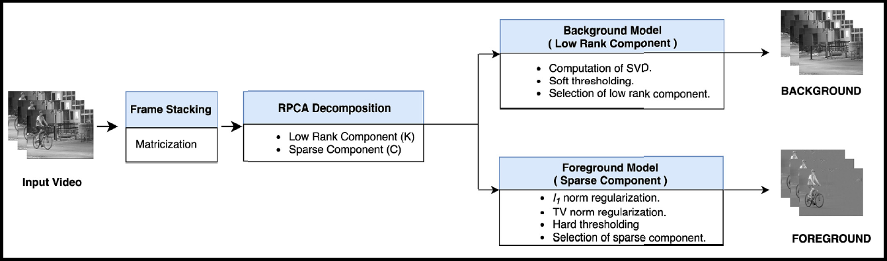

Dr. Anju Jose Tom – Expert in Data Modelling, Machine Learning, and Government Analytics
About
Dr. Anju Jose Tom is a Principal Data Modeller at Queensland Treasury, leveraging her expertise in data science, machine learning, and advanced analytics to drive data-driven decision-making for government agencies. With a deep understanding of predictive analytics, economic forecasting, revenue modelling, and financial compliance, she develops and optimizes models that impact Queensland’s financial strategies and exemption schemes.
Her technical proficiency includes Python, SQL, SAP, Databricks, and Azure, with a specialization in scalable data solutions, machine learning model integration, and financial policy insights. She excels at transforming complex datasets into actionable intelligence, supporting policy decisions, revenue forecasting, and compliance automation.
Expertise
- Machine Learning & Predictive Analytics – Designing and implementing models for exemption schemes, compliance automation, and revenue modelling.
- Government Data Solutions – Developing data-driven frameworks to enhance financial governance, taxation systems, and economic forecasting.
- Technical Leadership – Expertise in Python, SQL, SAP HANA, Azure, and Databricks to build scalable and robust data infrastructure.
- Strategic Data Modelling – Creating high-impact analytical models to improve compliance, policy effectiveness, and decision-making.
Academic & Research Background
Before transitioning to government data modelling, Dr. Anju Jose Tom built a strong research career in electronics, computer vision, and AI-driven automation. She earned her Ph.D. in Electronics Engineering from NIT Calicut, India, focusing on computer vision and signal processing. Her research has been published and cited in international journals and has contributed to Australian Department of Defence projects and other leading research institutions.
She has also worked as a Research Fellow (Level B) at Queensland University of Technology (QUT) in the School of Electrical Engineering and Robotics, leading technical project management and research initiatives. Her ability to bridge academic research with real-world applications sets her apart as a subject matter expert in data modelling, AI, and technical project management.
Project Management & Industry Experience
Dr. Anju Jose Tom has a strong project management background, having worked with INRIA, a world-renowned research institute in France, and in various leadership roles in academia and industry. She holds a Diploma in Project Management and has successfully led multi-disciplinary projects, national conferences, and technical workshops.
Her expertise includes:
- Project Master Planning & Administration
- Stakeholder Engagement & Policy Alignment
- Risk Management & Compliance Analytics
- Technical Research & Data Strategy Execution
Dr. Anju Jose Tom is passionate about leveraging data science for public good, enhancing government analytics, and driving AI-enabled financial governance. She thrives in solving complex challenges at the intersection of machine learning, policy modelling, and compliance automation.
She is open to collaborations with government agencies, policy research groups, and AI-driven analytics teams.
For Research, Anju worked in the area of Moving Object Detection (MOD) from surveillance videos. Her research interest includes object detection from dynamic background video sequences, noisy video sequence, incomplete/partially observed video sequences, compressive sensed/subsampled videos, etc. She is also interested in the super-resolution frameworks for vision. The summaries of some of her works are provided below.
|  |
This work proposes a method in which the video data is treated as a tensor throughout the implementation thereby ensuring efficient utilization of the structural properties of the video volume. It also addresses the dynamic background issue (swaying trees, moving water, waves, etc.) by solving a tensor optimization algorithm of a convex formulation that is convergent in nature. Moreover, the low-rank property is used to extract the structured part of the scene while Tensor Total Variation (TTV) is incorporated to draw out the foreground part of the emotive surroundings. |
|  |
This method takes advantage of the special features of tensor singular value decomposition (t-SVD) along with regularizations using l1/2-norm with half thresholding operation and tensor total variation (TTV) to develop a noise robust MOD system with improved detection accuracy. While t-SVD exploits the spatio-temporal correlation of the video background, l1/2 regularization provides noise robustness besides removing the sparser but discontinuous dynamic elements in the spatio-temporal direction. Moreover, TTV enhances the spatio-temporal continuity and fills up the gaps due to the lingering objects and thereby extracting the foreground precisely. The proposed three-way optimization method is designed to address both static and dynamic background cases of MOD separately with the intention to reduce the misclassifications due to moving/cluttered background. |
|  |
Automated cleaning systems are less common in extreme surveillance environments such as traffic surveillance cameras placed at large heights (contaminants: combustion particles, asphalt deposits), open pit mining industries (contaminants: quarried, dry mineral dusts, exhaust fumes from diesel vehicles and other machinery), hazardous rooms, chambers, shafts, wind tunnels where the spoliation is extensive and continuous. The surveillance video sequences obtained from this cameras may be incomplete and entries at the positions of contaminants may be missing. The accumulations of combustion fuels, dust, dirt, spider webs, etc., affect the visibility and clarity of the captured video data to different degrees resulting in incomplete (missing) video sequences. Grounded on this significant practical scenario, this work proposes a scheme to concurrently complete the missing entries and detect moving objects with efficient background separation by formulating a single convex optimization problem developed and implemented in the tensor framework. |

|
The spatially distributed digital cameras in Wireless Multimedia Sensor Networks (WMSN) are provided with miniature batteries resulting in power constraints. Hence these cameras acquire compressive measurements of video at a rate significantly below the Nyquist rate and transmit them wirelessly in the network. Thus, the encoding side (transmitter) is made less complex at the expense of increased complexity at the more resourceful decoder (receiver). Well grounded on the this relevant practical scenario, a unified system is proposed that integrates detection of moving objects into the CS recovery framework and thereby realizing simultaneous data recovery and object detection in a single convex optimization problem which guarantees fast response. To accomplish this, the concepts of multi-linear tensor algebra are manipulated to implement low rank approximation on the highly correlated background components. A Laplace function based surrogate for Tensor Nuclear Norm (TNN) is formulated to provide adaptive thresholding for the singular value tubes of the background tensor. Moreover, the spatio-temporal continuity of the foreground is explored using 3D-Piecewise Smoothness Constraints combinations based Anisotropic Total Variation (3D-PSCATV) regularization along with l1 regularization. The proposed model is solved using Alternative Direction Method of Multipliers (ADMM) scheme. The quantitative and qualitative results validate the superior performance of the proposed method against the compared approaches. |
|  |
Video surveillance has become a significant method to preserve public security specifically for the forensic field where high resolution videos are vital. However, the security video footage captured is found to be low in clarity and deteriorated with noise, blurs and uneven illumination which can cause false detections and wrong interpretations. In light of this relevant fact, this work proposes a novel technique which does video super resolution with simultaneous detection of the moving objects using a tensor based convex optimization problem without the necessity of a reliable training data. The ideas of multilinear algebra are utilized in the super resolution framework to implement re-weighted tensor nuclear norm minimization for separating the highly correlated scene background. The spatio-temporal continuity featured by the sparse foreground components is grabbed by the Tensor Total Variation (TTV) regularization to achieve precise object detection along with l1 regularization. The brilliance of the proposed approach is confined in the efficient formulation and implementation of video super resolution and simultaneous moving object detection from the available deteriorated videos. This is solved using the Augmented Lagrangian Method (ALM) with alternating direction scheme and the results validate the superior performance of the proposed method against the compared approaches. |
|  |
In this work, we propose a new moving object detection method from noisy video data. In general, background of videos are assumed to lie in a low-rank subspace and moving objects are assumed to be piecewise smooth in the spatial and temporal direction. The proposed method consolidates the basic mathematics involving nuclear norm, l2-norm, l1-norm and Total Variation (TV) regularization in a unified framework to obtain simultaneous denoising and MOD performance. The nuclear norm exploits the low-rank property of the background, the sparsity is enhanced by the l1- norm, TV regularization is used to explore the foreground spatial smoothness and noise is detected and removed by the l2-norm regularization. |
|  |
Inspired by the challenging cases yet to be resolved in Moving Object Detection (MOD), a new formulation is done to detect moving objects from video sequences based on Robust Principal Component Analysis (RPCA) principle by adopting the regularization of Total Variation (TV) norm using a convergent convex optimization algorithm. The objective is to experimentally prove the possibilities of regularizing nuclear norm, l1- norm and TV-norm in unified scheme. While the nuclear norm exploits the low-rank property of background, the sparsity is enhanced by the l1-norm and the foreground spatial smoothness is explored by TV regularization. |
|
|
|
|